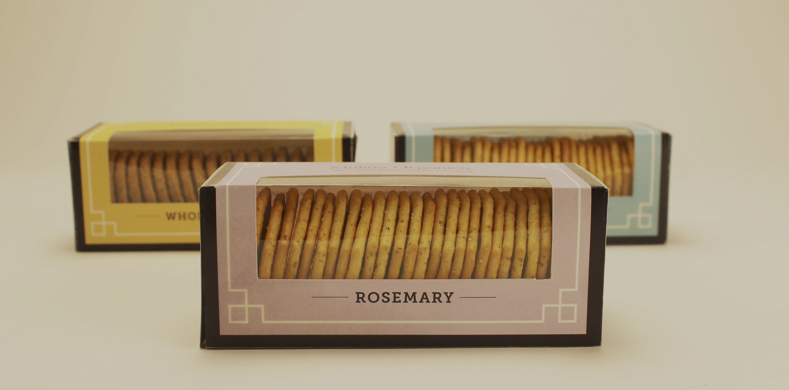
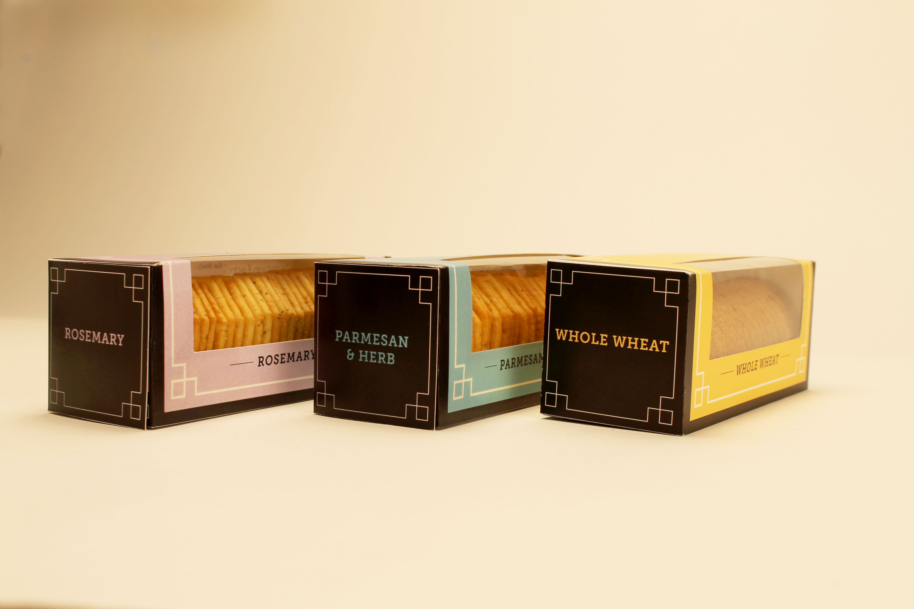
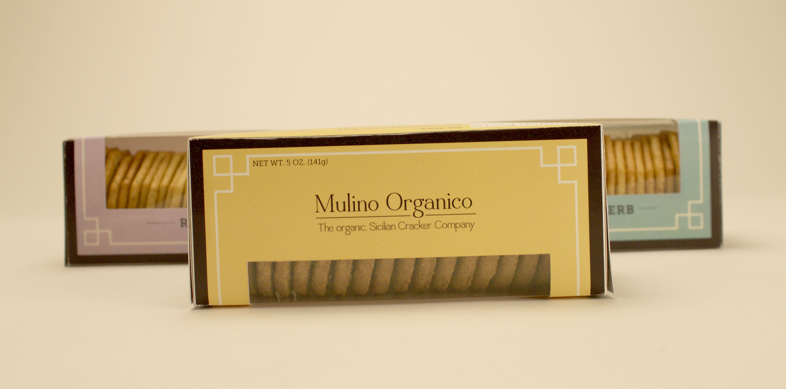
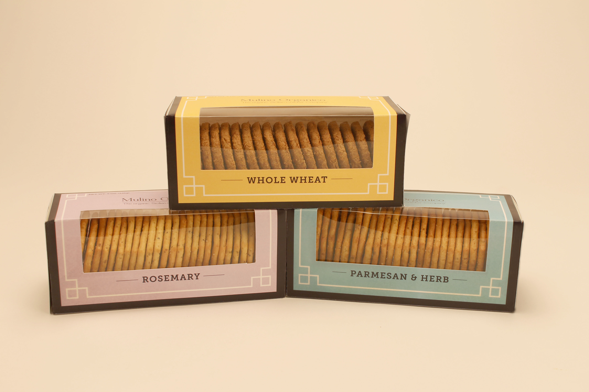
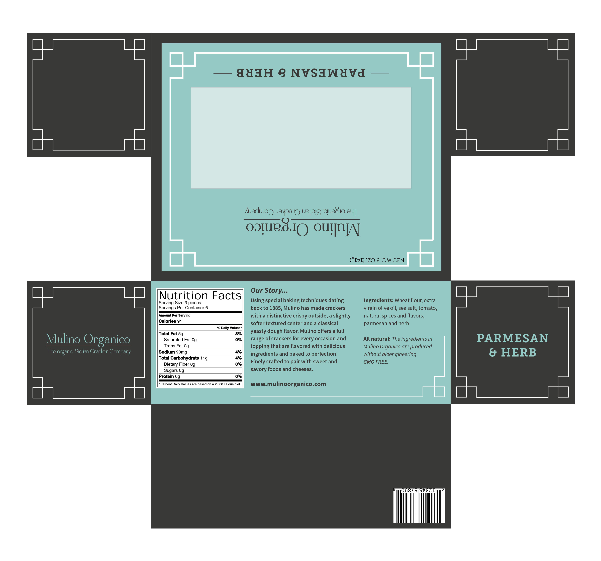

Mulino Organico Packaging
Brief: The client, Mulino Organico, was looking to enter the high-end cracker market. A brand based from Sicily, Italy who prided itself on its organic, all-natural cracker. In order to sell in the high-end grocery stores the brand required a fresh packaging design that would stand out from its competitors but stay true to its authenticity.
Using a blend of modern and classic typography allowed it to appear fresh but true to its Italian tradition. Taking inspiration from its architecture and art came the use of the packagings ornate patterns and lines.





Above is the flat version of the box, what it would look like before construction.